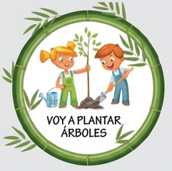

TU ACCIÓN ECOLÓGICA PARA LA PAZ
Separar los residuos
Antes de botar algo, identifica si es aprovechable, orgánico o no aprovechable y deposítalo correctamente.
CUIDAR LA CASA COMÚN ES CONSTRUIR PAZ
Lanza el dado, recibe un hábito ecológico y conviértelo en una acción real para vivir la paz cuidando nuestra casa común.



Antes de botar algo, identifica si es aprovechable, orgánico o no aprovechable y deposítalo correctamente.
LAS SEIS CARAS
Pulsa una tarjeta y descubre cómo empezar hoy.
“No hay gesto demasiado pequeño cuando millones decidimos cuidar.”
Reducir · Cuidar · Regenerar